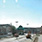

Inwestycje w: Suchy Las
-

Reorganizacja ruchu samochodowego
Reorganizacja ruchu drogowego w centrum Poznania pozwoli uniknąć wysokiego natężenia ruchu w tej części miasta. W celu stworzenia atrakcyjnego centrum głównie dla pieszych i rowerzystów ruch samochodowy powinien zostać wyciszony.
-
 Stworzenie dodatkowych miejsc parkingowych
Stworzenie dodatkowych miejsc parkingowychStworzenie dodatkowych miejsc parkingowych w miejscach głównych węzłów komunikacji miejskiej zmniejszyłoby ruch samochodowy. Miejsca parkingowe można stworzyć w pobliżu węzłów komunikacyjnych, gdzie ludzie czekają na autobusy lub tramwaje.
-
Domknięcie I Ramy komunikacyjnej
Ruch samochodowy zostanie przeniesiony z ulicy Solnej do północnej części miasta. Historyczna część miasta oraz Trakt Królewsko-Cesarski będą dostępne głównie dla pieszych.